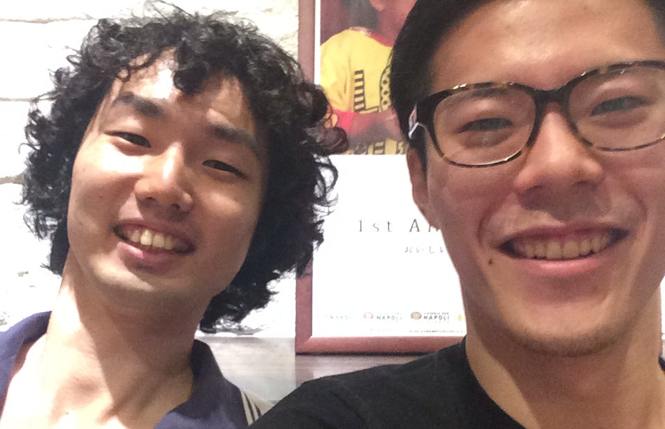
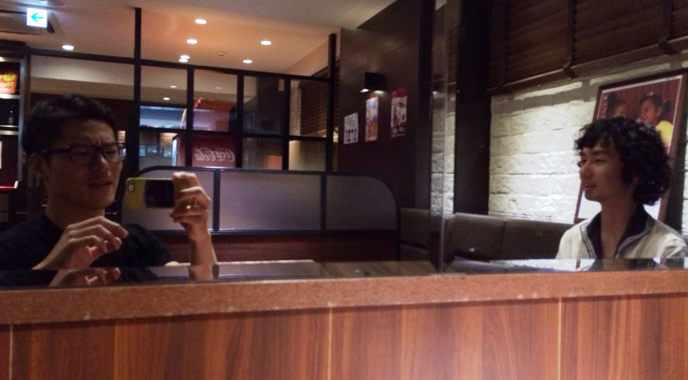
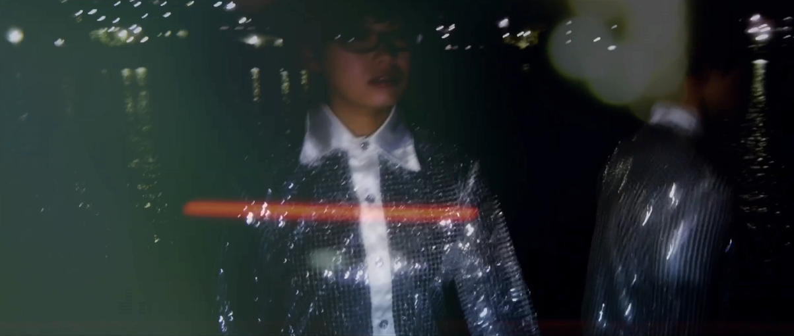
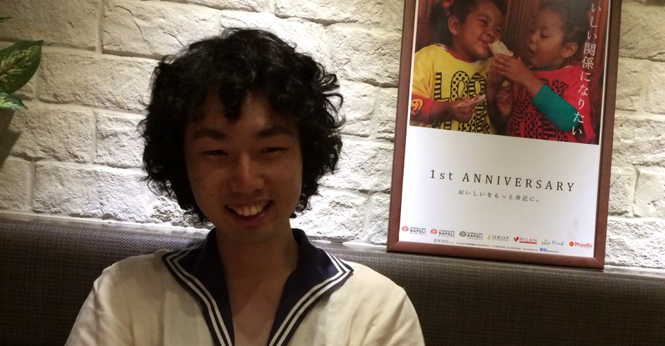
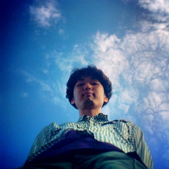

MV
LYRICS
yo a ke
作詞・作曲 さわいかん
演奏 deronderonderon
夜明け前 僕以外 誰もいない感じ
暗いとこ 照らす光 美辞麗句
ないものねだりで この危機感 so low
ないものねだりで 君の知性 so low
夜明け前 僕以外 みんな即くたばれ
暗いとこ 群れる君 目がシロい
ないものねだりで その危機感 so low
ないものねだりで 見て見ぬフリ so gong
Yes Noじゃない 真偽じゃない
ボーダーはない
勝ち負けじゃない 善悪じゃない
そう、君の知らないyo a ke
監督INTERVIEW
"yo a ke"MV監督 金巻勲さん×deronderonderonさわいかんトーク
出されたお題に対して自分の色をどう出していくのか
さわいかん（以下さわい）：金巻さんの自己紹介をお願いします。
金巻:それ一番苦手なんだよね～(笑)
さわい:そうなんですか！？(笑)まぁその、何をしている人なのかという紹介をお願いします！
金巻:金巻勲と言います。表向きには映像作家という肩書きでやっているんだけど、、、(笑)
それは人に説明するためにわかりやすく言っているモノで、僕の場合はディレクションもするし、編集もするし、はたまた千駄木ダンスという毎週千駄木でダンスを踊ってウェブでアップする活動をやっていたりと、映像に関する全てのことをやってます。
さわい:そうですよね。僕的にはすごく千駄木ダンスのイメージが強いんですよね。
金巻: Facebook で千駄木ダンスをいつもアップしてるんだけど、久々に会う友人に「映像の仕事ってあのダンスのことじゃないよね？」って言われて(笑)千駄木ダンスは部活動みたいなもので、映像の仕事はちゃんとしてます。
さわい:映像作家としては、今までどういうことをしてたんですか？
金巻:学生の頃はインスタレーションをやっていて、物体に映像を投影したりしてたね。でも、それもすごく不純な動機で始めてて、、、課題の発表の仕方がすごく嫌いで、全員の映像を繋げて上映する方式だったんだよね。
さわい:ああー、オムニバスみたいな感じですか？
金巻:そう。でもそれってさ、1日の上映の中で自分の作品が流れるのが3、4回しか無いんだよね。単純に、見てもらえる回数が少なくて嫌だった。そこで、展示もやってOKだったし、展示だとお客さんがいつでも見られるから展示にしたんだよね。
その展示がきっかけで映像インスタレーションをやり始めたんだよね。クモの巣みたいに糸を一杯張ってそこに映像を投影したり。
白い布でおっきい小屋を作ってそこに映像を投影してたり。四角い画面じゃないものが良かった。
映像ができて100年くらい経ってるのに、なんでまだスクリーンで見てるんだろう、もっと映像の形が変わんないのかな？って疑問だった。
さわい:プロジェクションマッピング的な形ですね？
金巻:スクリーンじゃないというところで見る映像というのがすごく好きで、そこに興味があったなぁ。映像のスクリーンも色々な形にフィットすれば面白いのに、って考えてた。
昔は「自分の作品が!自分の作品が！」っていう感じだったんだけど、あんまり今はそこには興味がなくて、今は出されたお題をどう解くか。出されたお題に対して自分の色をどう出していくのか。それが今は楽しい。
さわい:学生の時の話は、すごく素敵な歪みを感じました。
金巻:えっ歪み？！(笑)
さわい:疑問を投げかけまくるってなかなかできないと思うんですよ！素敵な歪みと言いますか。そう感じました！
予備校は地獄だった
さわい:そもそもどうして映像をやり始めたんですか？
金巻:元々、絵を描くのが好きだったからデザイン学科に行こうと思ってて。でもデッサンが必要で美大受験用の予備校に通う必要があったんだよね。
予備校のパンフレットを取り寄せたら「映像科」っていうのが書いてあって「これおもしろそうじゃん！！」ってなった。
当時、J-POP でも面白い Music Video がたくさんあって、宇多田ヒカルの"traveling"がその代表だよね。中学生ぐらいのときかな？
さわい:ああああ！その時期ですか!確かに振り返ってみれば、あの時期からMusic Videoの振れ幅がおっきくなてきてますよね。
金巻:Music Video に自分の世界観を作り込むっていうのがすごく多くて、音楽はやってたし好きだったから、音と関われる仕事をしたいと思ってた。
Music Video だったら音楽と関われるし、映像なんて今までの人生で関わった事もなかったから、新しい事もできて一石二鳥だと思ったから映像へ入ったんだよね！(笑)
さわい:意外でした!すごくノリノリですね！
金巻:ただ、予備校は地獄だった。とにかくいろんなことを疑え、と言われた。
常に自分の中の今まで積み重ねてきた常識を疑う日々。自分が向き合った事のない世界だったし、深く考えた事のないことを疑うっていうのは大変だった。
毎回作品に対して講評とディスカッションがあるんだけど、先生にはめちゃくちゃボロクソに言われたし。毎週打ちのめされてた。。(笑)
さわい:じゃあどうして続けてこれたんですか？
金巻:興味本位で映像という分野をやり始めたけど、やっていくうちにすごい謎が多くて、その謎がおもしろくてハマってしまったんだよね。きっとその謎は一生かかってもたぶん解決できないんだけど、追求してみたいと思った。
打ちのめされてたあの日々は無くてはならないね。うん。
さわい:そこから大学に進学したという感じですか。
金巻:そうだね、映像学科だったんだけど、映像にどっぷりっていうわけではなかった。自分が興味のあることをやりまくってたね！
さわい:僕は大学時代の金巻さんを想像できないっす(笑)
金巻:えっ、普通だよ！ちゃんと大学は行って単位取ってたし、他学科の授業も受けまく ってた。
さわい:そうなんですね! (笑)
金巻:映像は総合芸術だと思ってるから、色んな事に興味を持っていたいと思っている。

「光が滲んでいく」という景色が頭の中に浮かんで来たね。
さわい:では"yo a ke"のMVの話に移りたいのですが、この曲"yo a ke"はアルバムの他の曲に比べてものすごくストレートなんです。
deronderonderon にしては分かりやすい内容の歌詞で。
金巻さんはこの曲をどう捉えた上で、作品としてこの形に落とし込んだのかをお聞きしていいでしょうか？
金巻:歌詞は直球だと思ったし、自分が MV を作るときは音を全部展開しちゃうんだよね。
「このシンセの音がなってる」「ビートがこうだ」とか、何百回も聴いてイメージを膨らませてる。
ただ、一番大事なのは、初めて聴いた時の印象だと思ってる。
初めに聴いたときにイントロのシンセの音が印象的で、そこから「光が滲んでいく」という景色が頭の中に浮かんで来たね。歌詞も歌詞で、葛藤だったり、内に秘めてるモノという印象を受けて。しかもタイトルが"yo a ke"だったので、何かが終わって何かが始まるってイメージも持ったね。
で、いつも絵コンテとかを書くんだけど、今回は書かなかったし、どういう進行でやるかも一切決めなかった！(笑)
全部現場で決めていったね。まるでセッションみたいなスタイルでね。
さわい:そうでしたよね！！！
金巻:場所だけなんとなく選んだだけで、どういう絵が撮れるのかっていうのも分かってなかった。
わざとそういうスリリングな状況を作ってみた(笑)
そんな中で、"yo a ke"のテーマをブレないようにして deron のメンバーが入ったときにどういう物語が作れるのかを考えた。
もちろんストーリーはあるよ！それは言ったらおもしろくないから言わない!(笑)
一個だけ言うと、最初と最後のシーンは一緒！
さわい:あっっっーー！
金巻:映像のストーリーとしては永遠ループなんだよね。
いつも着てるキラキラの衣装もすごいおもしろいなと思ってて。野望だとか誰かが心の中に隠し持っているものとかが、夜になって周りの雑音もなくなって静かになり、ふと現れる。
で、朝になると日が当たって街が活発化してくる。
そうすると見えなくなるから消えちゃうんだよね。
さわい:なるほどー。ほぼネタバレですね！
金巻:いいんだけどね！(笑)
さわい:撮影は、冬場でしたよね。雪が降ったりして。
金巻:寒かったよねー！よくみんな頑張ったよね！
さわい:ありがとうございます！(笑)
金巻:"yo a ke"ってめちゃくちゃ直球の曲だったから、最初はかん君が海辺でアカペラで歌った映像でいいじゃんって思ってたよ！(笑)
さわい:えっそうだったんですか！
金巻:そうだよ！でも、ちゃんとレコーディングされた曲を使わなきゃだよね。
この MV に関しては、大筋のストーリーはあるけれども、見てくれた人が思った事を肉付けしながら見てくれたらいいなって思ってる。
「マチルダ何してんの？！」みたいな。そういう広がりを持てるように作ったよ。
さわい:僕は、メンバーの幾何学的なダンスを踊っていて、それが重なる瞬間のシーンがお気に入りです。
そして、すごくすーっと見る事ができる作品なと思いました！
金巻:すごく音楽に寄りそって作ったから、そういう印象を持ってくれるのは嬉しい。
個人的には、編集っていう作業はすごく音楽に似てると思っていて、「ここでアクセントをつける」とか「ここでブレイクとして黒みを入れる」とか。
そういう音楽にとても近い構造があると思う。
さわい：そうだったんですね！

バンドブームをもう一回作って!
さわい:では、最後に deronderonderon にはこうなって欲しいというのはありますでしょうか？
金巻:うんうん。最近、バンドに全然元気が無いなって思っていて。バンドブームをもう一回作って！(笑)
さわい:「もう一回作って」ってヤバイっすね。
金巻:だってバンドかっこいいじゃん！
今は1人でも色んなことはできるんだけど、でもバンドって1人じゃできないし、それがスタンダードだったりするよね。
まぁ時代的に昔と違って色んなことができるから、遊びを取り入れながらやってほしいな！
さわい:それはありますね。それはすごく感じてます。バンドの枠組みを解体したいっす。
金巻:でもあれだよ、やっぱりバンドは曲とライブだからね！曲ありきだからね。良い曲をこれからも作っていってください！
さわい:はい！精進します！新しいバンドブームを作ります！ありがとうございました。金巻勲さんでした！

金巻勲(カネマキイサオ)
------
1986年愛知県生まれ
東京工芸大学卒業後、2008年より映像制作の活動を開始。
これまで、音楽家「阿部海太郎」ファッションブランド「シアタープロダクツ」「writtenafterwards」「スペクタクル・イン・ザ・ファーム」の映像制作を中心に手がける。
2012年、ドリフターズサマースクール参加をきっかけにダンスを始める。
その後「千駄木ダンス」を結成。毎週ダンスを作りウェブ上で発表している。
isaokanemaki.com
sendagidance.jp
